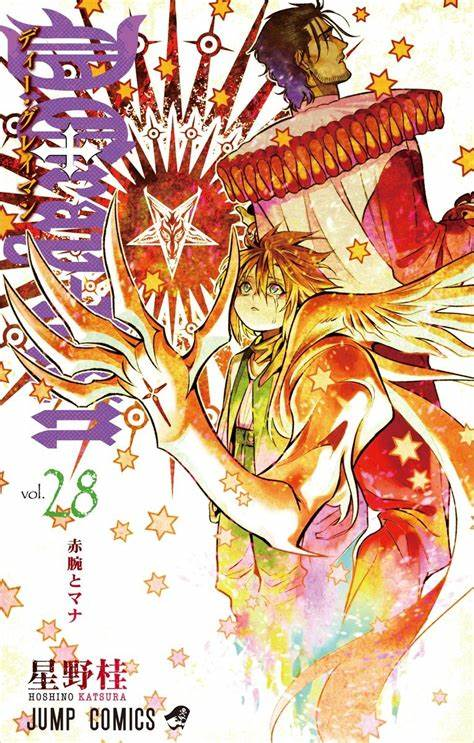
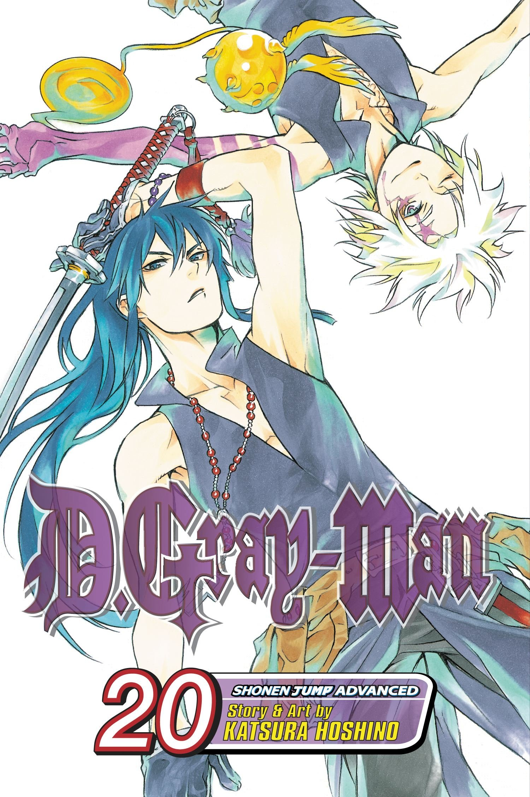
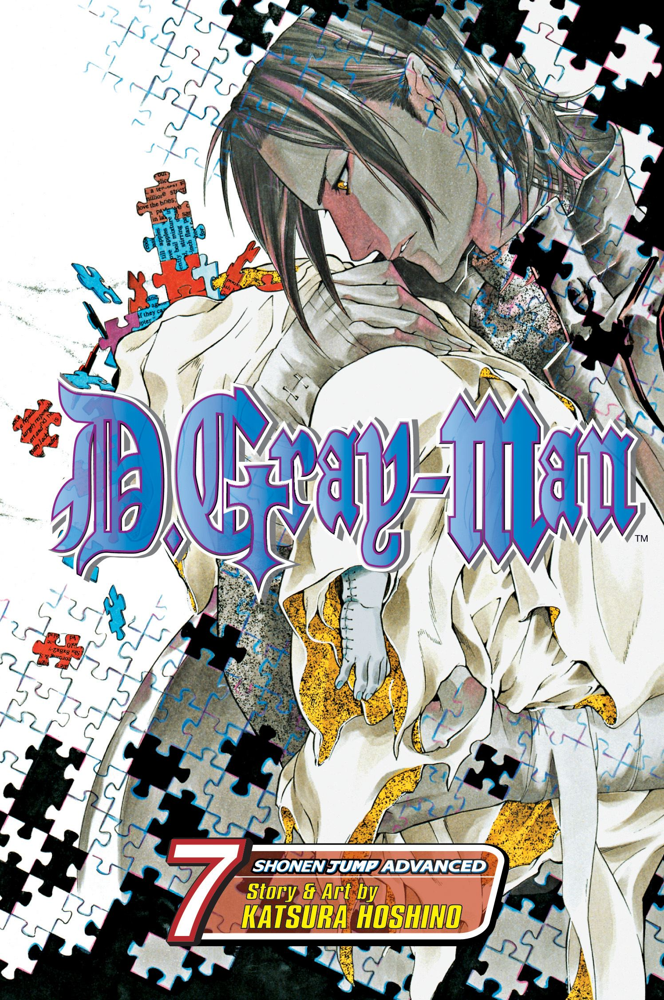

 D.Gray-man is a Japanese manga series written and illustrated by Katsura Hoshino. Set in an alternate 19th century, it tells the story of a young Allen Walker, who joins an organization of exorcists named the Black Order. They use an ancient substance, Innocence, to combat a man known as the Millennium Earl and his demonic army of Akuma who intend to destroy humanity.

D.Gray-man Manga
The manga was licensed for English-language publication in North America by Viz Media. The company published the first collected volume of the series on May 2, 2006. The 28th volume was released on November 14, 2023. Viz Media reissued the series in a 3-in-1 format, publishing eight 3-volumes-in-1 editions from July 2, 2013, to November 3, 2015. Madman Entertainment published the Viz's 27-volume English edition in Australia and New Zealand,from August 10, 2008, to November 15, 2021.

D.Gray-man Anime
A 103-episode anime television series adaptation, animated by TMS Entertainment, was broadcast TV Tokyo from October 2006 to September 2008.
A 13-episode anime series sequel, titled D.Gray-man Hallow, also animated by TMS Entertainment, was broadcast on TV Tokyo from July to September 2016.